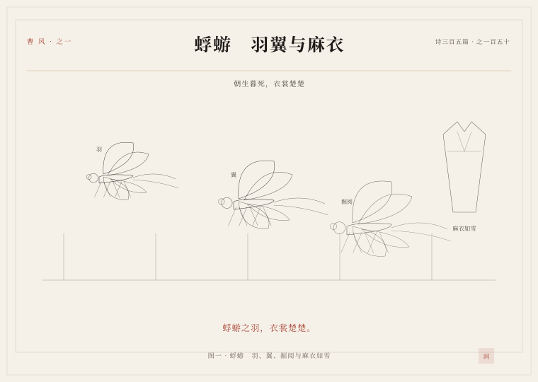
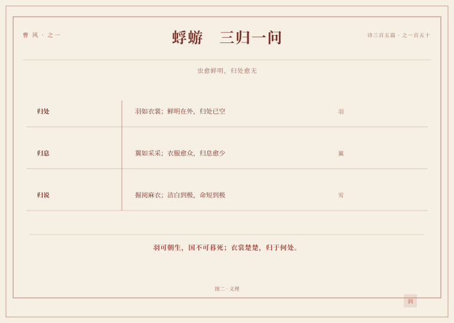

第一百五十篇 蜉蝣
曹风 · 之一 SJ150
朗读 · 普通话
依经文原文朗读，章次不读出；配古琴底乐，不改速、不加拖腔。全库同一音色（豆包 TTS），非播音员录制。
一 解题
诗三判：
- 谁在说：曹国之人。见朝生暮死之蜉蝣，羽翼楚楚、衣裳采采，反观曹君好奢而国小不能自守，遂忧其无所归。
- 说什么事：三章只写一虫：羽、翼、掘阅；只写三「归」：归处、归息、归说。虫愈鲜明，归处愈无。
- 为何编在此：曹风四篇以此为首。曹国小而逼，君好奢、任小人，开卷先以朝生暮死之虫立「国将无归」之象。
《毛序》：「《蜉蝣》，刺奢也。昭公国小而迫，无法以自守，好奢而任小人，将无所归。」
朱子《诗集传》：「赋也。蜉蝣，小虫，朝生暮死；楚楚，鲜明貌。心之忧矣，于我归处，言其将有无所归也。」二章：「采采，众多貌。」三章：「掘阅，犹言掘穴而出也。麻衣，白布衣也。说，舍也。」
本库的看法：《蜉蝣》是一首把「国之将亡」写成一只朝生暮死之虫的诗。
毛序说「刺奢」，朱子说「无所归」，二说一政一命，其实同指：衣裳越鲜明，归处越空。
须辨：蜉蝣是朝生暮死之虫，不是蜻蜓；楚楚是鲜明，不是整齐；采采是众多，不是采撷；掘阅是掘穴而出，不是挖掘察看；「归说」是归舍，不是归悦。诗人不是咏虫，是借虫之短，照人之奢。
断语：羽可朝生，国不可暮死；衣裳楚楚，归于何处。
先辨五事：「蜉蝣」是朝生暮死的小虫，不是蜉蝣科泛称；「楚楚」是鲜明，不是楚楚可怜；「采采」是众多，不是采摘；「掘阅」是穿穴而出，不是掘开查看；「说」读税，是舍息，不是喜悦。
二 经文
第一章
蜉蝣之羽，衣裳楚楚。
心之忧矣，于我归处。
第二章
蜉蝣之翼，采采衣服。
心之忧矣，于我归息。
第三章
蜉蝣掘阅，麻衣如雪。
心之忧矣，于我归说。
三 韵读
- 一章：羽、楚、处，鱼部相叶。三字一韵，声轻而飘。
- 二章：翼、服、息，职部相叶。入声收，声短而促。
- 三章：阅、雪、说，月部相叶。入声更重，声尽而空。
读法：三章韵皆短促，正合蜉蝣之命；羽、翼、掘阅，一层比一层短；归处、归息、归说，一层比一层空。
四 字义与名物
- 蜉蝣：朝生暮死的小虫，羽翼鲜明。羽：翅。楚楚：鲜明貌。衣裳：上衣下裳。
- 翼：翅。采采：众多貌。衣服：衣裳。归处：所归之处。归息：所归而息。
- 掘阅：穿穴而出。麻衣：白布衣。如雪：洁白。归说：归而舍息；说读税。
五 今译
一章：蜉蝣的羽翅，像衣裳一样鲜明。我心忧愁，我将归向何处。
二章：蜉蝣的翅膀，像众多衣服。我心忧愁，我将归向何处安息。
三章：蜉蝣穿穴而出，麻衣白如雪。我心忧愁，我将归向何处舍息。
六 章旨
- 一章：羽如衣裳，是「形似」；虫之鲜明，照人之服饰。归处一问，先立「无归」。
- 二章：翼如采采衣服，是「众多」；服饰愈多，归处愈少。归息一问，再逼一层。
- 三章：掘阅而麻衣如雪，是「短命之洁」；洁白到极处，命短到极处。归说一问，归于空。
七 诗教
- 奢不能自守：国小而无守，服饰愈盛，归处愈无；诗之刺，不在衣服，在「无所归」。
- 朝生暮死是镜：蜉蝣之短，照国之将亡；不是教人及时行乐，是教人看见乐尽之处。
- 三归一问：归处、归息、归说，问三次，答一次也无；问得越轻，亡得越近。
八 分寸与边界
- 不把「蜉蝣」读成及时行乐：诗以虫之短刺人之奢，不是劝人享乐。
- 不把「楚楚」读成可怜：楚楚是鲜明，不是楚楚可怜；读成可怜，则刺奢之义失。
- 不把「归」读成归隐：归处是所归之地，不是归隐；国亡则无地可归。
- 不把曹昭公坐实为一切：诗辞无谥号，毛序系之昭公；所刺之君存参，所刺之奢可定。
九 存疑
- 诗旨：毛序「刺奢」，朱子「无所归」。本库从毛朱，以奢与无归为骨。
- 「蜉蝣」：毛传「渠略」，朱子「朝生暮死」。从朝生暮死。
- 「掘阅」：一说掘穴而出，一说容貌掘阅。从穿穴而出。
- 「说」：毛传「舍也」，朱子「舍也」。从舍息。
十 跨典
- 《诗经·曹风》四篇，由蜉蝣之短、候人之失、鸤鸠之一、下泉之思，收尽一小国将亡之相。
- 《庄子·逍遥游》「朝菌不知晦朔，蟪蛄不知春秋」；此篇以蜉蝣喻短，而更痛者在「归处」。
- 《古诗十九首》「人生忽如寄」；此篇「于我归处」，正是「寄」字之问。
十一 双卡与图
六对：
| 蜉蝣（朝生暮死之虫） |
蜉蝣（蜻蜓） |
| 楚楚（鲜明） |
楚楚（可怜） |
| 采采（众多） |
采采（采摘） |
| 掘阅（穿穴而出） |
掘阅（掘开查看） |
| 归说（归而舍息） |
归说（归悦） |
| 于我归处（我将何处归） |
于我归处（归隐） |

图一 · 蜉蝣 羽翼楚楚，麻衣如雪

图二 · 蜉蝣 三归一问，归于何处